Sub-topic: Wallgroups |
| Problems and Solutions |
In this subtopic we'll deal with the basic method for creating wallgroups and then take a look at some of the problems you can expect to run across.
Wallgroups require a minimum of three vertices, with the exception of hovering walls which require five. Any less than the required number will cause a CTD; in the case of standard wallgroup the Infinity Engine will either hang or will shut down without warning but the hovering wall may give an error message that is more or less helpful, depending on the contents. So, let's get on with creating some wallgroups.
The wallgroup section is the lower one-third of the Wed Editor.
|
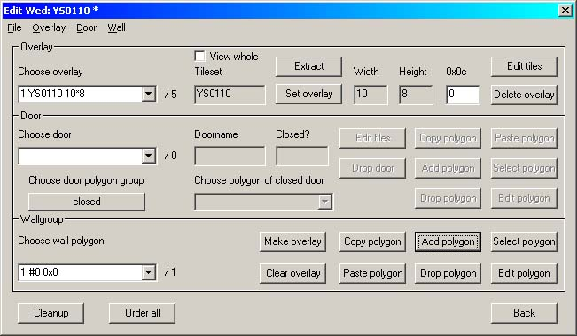 Image 1 - Wallgroups in the Wed Editor |
This will launch the Polygon editor.
|
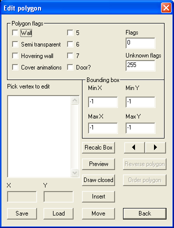 Image 2 - the Polygon Editor |
Polygon flags don't behave quite the way you would expect; sometimes they need to be used in combination. The first line is the one you will be making use of 95% of the time.
| Wall | Semi- transparent | Hovering Wall | Cover animations | Door | |
| X | Dithers any part of a cre that is inside the wallgroup but only if the feet are higher than the blue baseline | ||||
| X | X | As above, but also cuts off any part of any animation that is inside the wallgroup (e.g. fires in fireplaces). Use with the 'Not covered by wall' flag (see 'Animations') | |||
| X | Dithers any part of a cre or animation that is inside the wallgroup. Requires at least five polygon points (see below). | ||||
| X | X | X | Doors-only combination. Loads automatically when editing a door | ||
| X | Cuts off any part of any animation that is inside the wallgroup. Use with the 'Not covered by wall' flag (see 'Animations'). Note that this also cuts off any animation surrounding a cre (e.g. protection from normal missiles) unless the Wall flag is also selected (combination 2 above) |
This will load the Preview screen, puts the Polygon Editor into Insert mode and should display your area, but sometimes it sits there as a big blank box. If this happens,
That usually fixes it. Carefully draw an outline around the area you need to modify - each time you click on the screen another vertex will be added to the list. Here I've selected the rear pillar.
|
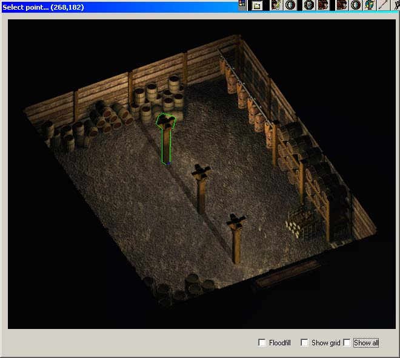 Image 3 - Rear pillar wallgroup |
If you are not happy with the size or shape of the polygon, go back the Edit Polygon screen and
The Polygon Editor is now in Modify mode. Click on anyone of the listed vertices and you will see it light up in the Preview screen as a red dot. When you've identified the one that you are not happy with, click on the screen at the place you would like that vertex to be and DLTCEP will move it for you. If you've added too many vertices or you just want to simplify the polygon, go to the polygon editor vertex listing and double-click on the vertex that you don't want; DLTCEP will remove it from the list and the preview. When you are satisfied,
By the time I've added the other two pillars, my warehouse is finished. A hint here; if you are creating an area where characters can walk behind walls and you think that the resulting dithering is too bright, then go back to the Light Map and add a dark grey lighting area to that wall.
| Creating the Wallgroup Polygon |
So what happens if the wallgroup doesn't work when you test it? You'll get used to this! The one thing to bear in mind is that with overlapping wallgroups the position of the baseline in one wallgroup can influence the behaviour of another wallgroup. Sooner or later you will run up against the odd problem where the middle of a set of overlapping wallgroups doesn't dither the cre. Influences that overlap in a particular way causes the Infinity Engine to treat that area as if there is no wallgroup there at all. Sometimes trial-and-error is the only way to figure it out.
What's 'too many' wallgroups? I have no idea. Image four shows a section of a small wood that works perfectly. Fries your eyes nicely, doesn't it? I paid careful attention to the wallgroups so that a cre that has an animation such as Protection From Normal Missiles active and then walks under a tree with only a few branches on it will have parts of the animation show between the branches.
|
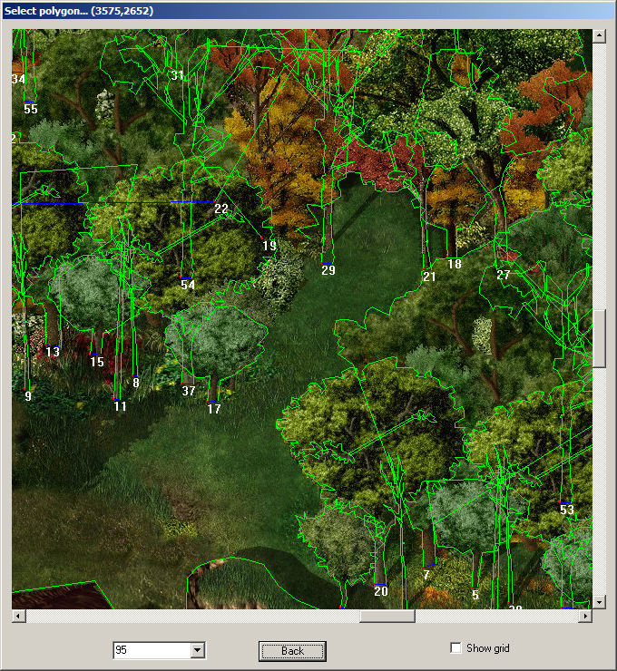 Image 4 - Wallgroups in a wood |
Problem 1: The animations are not dithered at all or they are only dithered in one part of the wallgroup.
|
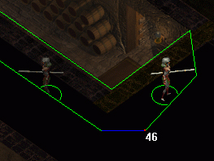 Image 5 - Partially failed wallgroup |
In the composite image above, Jaheira is dithered on the left but not on the right, but in both cases she is obviously within the wallgroup polygon. The fix can be quick and easy or it can be a real pain; it depends on the shape of your wallgroup. The first move is to check that you only have Wall selected for this type of wallgroup. Secondly, ensure that the baseline (the blue line in the polygon) is the lowest line and that it is perfectly horizontal; insert another point if it's required to achieve this. If both of these fixes fail then you will need to remove any concave points. This may mean dividing your wallgroup into two or more wallgroups but it usually solves the problem. In this case dividing the wallgroup into two separate wallgroups fixed it.
Problem 2: The doorway cuts off part of the animation.
|
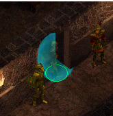 |
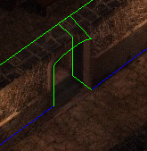 Image 6 - Doorways |
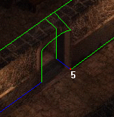 |
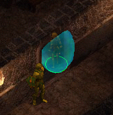 |
In part one of the image the animation is cut off by the doorpost and is not cut off by the door arch. The second part shows the wallgroups in DLTCEP. To make the doorway behave correctly the wallgroup nearest the player needs to outline the arch and to continue past the door arch on the far side. The furthest wallgroup defines the farside doorpost and overlaps inside the nearside arch wallgroup. Done correctly, they will dither any cre that walks behind them but not as the cre comes through the arch. In this case the broken animation is caused by a misplaced baseline - see how the righthand wallgroup influences the lefthand wallgroup such that the arch part does not dither the animation at all. Use the left-right arrows in the Polygon Editor (see Image 2) to move the baseline into the arch as shown in part 3; it's worth studying this image as it shows the best way to create a doorway. Part 4 shows the result of moving the baseline.
Problem 3: The door cuts off part of the animation.
|
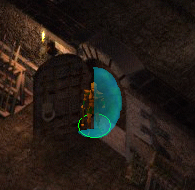 |
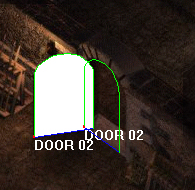 Image 7 - Doors |
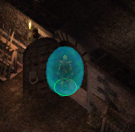 |
The cure for this lies not in changing any of the wallgroups but in dropping the relevant door polygon.
Dropping the polygon has no effect on the operation of the door - you will still get the cyan shading when you select the door in the game and it will still open and close correctly. A second solution that sometimes works is to adjust the door blocks (see the 'Doors' topic) so that the cre is pushed away from the polygon base. This one doesn't always work but it's worth a try before dropping the polygon.
Problem 4: The edge of an object cuts into the animation.
|
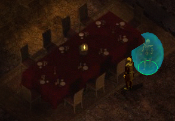 |
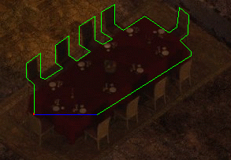 Image 8 - Object Edges |
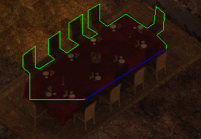 |
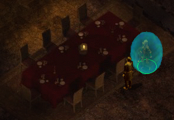 |
If you look at the wallgroups in DLTCEP (section 2) everything looks okay: the baseline is the lowest line, it's level and the cre feet are not inside it anywhere. This is another baseline error - moving it round one line (section 3) will fix it (section 4).
Problem 5: The Hovering Wall crash.
|
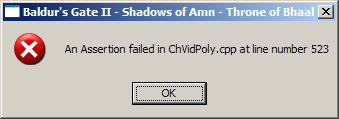 Image 9 - Hovering wall CTD |
The error message may contain additional information along the lines of 'Exp: m_nVertices>=3' and 'Msg: no msg.' but the line number (523) in my experience is always the same. This is caused by the wallgroup having less than five vertices. Hovering walls actually contain two data fields; the baseline (defined by the blue line when you are creating the polygon) and the polygon outline (all other vertices). When the wallgroup is drawn onscreen the baseline is ignored when the Infinity Engine counts the wallgroup vertices, hence a polygon of less than five vertices (the baseline plus a triangle) will correctly trigger the 'm_mVertices>=3' error. The answer is to increase the number of vertices in the wallgroup so that it exceeds five.
However, there is also a really dirty way to create a wallgroup that will dither any part of an NPC that walks under it. Simply leave out all wallgroup flags.
Problem 6: Hovering wall cutouts.
|
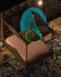 |
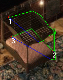 Image 10 - Wall cutouts |
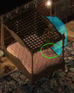 |
The problem is shown in section 1. When checked in DLTCEP there is nothing obviously wrong with the wallgroups; in this illustration wallgroup 1 is set as Hovering and wallgroups 2 and 3 are set as Wall. The cutouts are caused by the Infinity Engine getting confused as to which parts should actually be dithered and which not. Effectively it is a form of baseline error. You have two choices here; play with the baselines on the affected wallgroups (1 and 3) or take the quick'n'dirty way out by removing all flags on the hovering wall (1) - which is what I did (section 3).
Problem 7: Non-NPC animations (fires etc.).
There are a number of problems that can occur when trying to create wallgroup interaction between NPCs and static animations. In this case, 'static' means animations that remain in one place; fires are probably the most obvious illustration of this. Given that, we will take a fire burning in an enclosed fireplace and see what can happen.
|
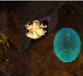 |
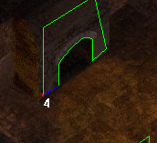 Image 11 - Fires (part 1) |
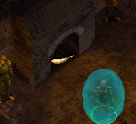 |
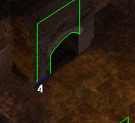 |
Section 1 is our fire without wallgroups. If we then create the obvious wallgroup in DLTCEP (section 2) what is most likely to happen is shown in section 3. The Infinity Engine incorrectly joins two lower vertices to cut off almost the complete animation. The fix is to re-jig the wallgroup so that it looks like section 4. If you think about it, this is the most logical wallgroup as the isometric view means that any flames will be covering up the wall furthest from you anyway. Incidently, if you get the opposite effect to section 3 with a section 2-type wallgroup (i.e. the animation still shows over the top of the wallgroup so that you get a section 1 appearance), check the animation itself to ensure that the 'Not covered by wall' flag is NOT checked.
|
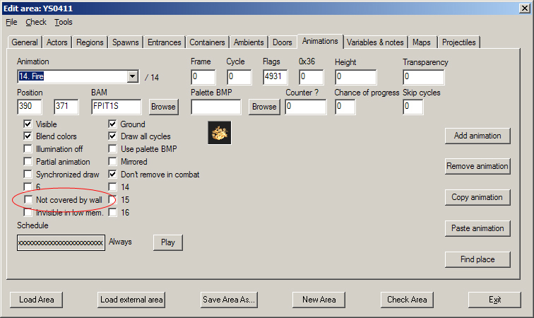 Image 12 - 'Not covered by wall' flag |
So, at this point the fire now appears to be behaving itself (section 1, image 13 below).
|
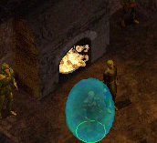 |
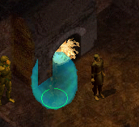 Image 13 - Fires (part 2) |
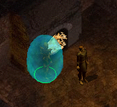 |
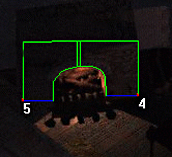 |
Unfortunately, as you approach the fire, the wallgroup then cuts off any animation carried by the NPC (section 2). This is almost always caused by either a missing 'Wall' flag or a missing 'Cover Animations' flag - see the flags table above. The two need to be used together to resolve the problem (section 3). Finally, section 4 illustrates how to resolve the animation cutoff problem shown in Image 11 Section 3 when the fireplace faces the player directly - use two or more wallgroups to outline the cutoff area.